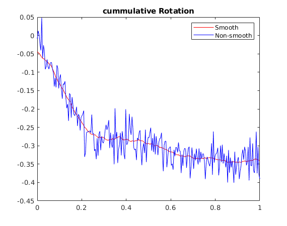

Contents
Read Video & Setup Environment
clear
clc
close all hidden
[FileName,PathName] = uigetfile({'*.avi'; '*.mp4'},'Select shaky video file');
cd mmread
vid=mmread(strcat(PathName,FileName));
cd ..
s=vid.frames;
Your code here
N = size(s,2);
R = zeros(N-1,1);
T = zeros(N-1,2);
for i=1:N-1
img1 = s(i).cdata;
img2 = s(i+1).cdata;
x1 = detectSURFFeatures(rgb2gray(img1));
x2 = detectSURFFeatures(rgb2gray(img2));
[features1, temp1] = extractFeatures(rgb2gray(img1), x1);
[features2, temp2] = extractFeatures(rgb2gray(img2), x2);
indexPairs = matchFeatures(features1,features2);
x1 = temp1(indexPairs(:,1), :);
x2 = temp2(indexPairs(:,2), :);
x1 = x1.Location;
x2 = x2.Location;
H = ransacHomography(x1,x2,1.5);
matp = H;
R(i,1) = atan(matp(2,1)/matp(1,1));
T(i,:) = matp(1:2,3)';
end
window = 15;
newR = zeros(N-1,1);
newT = zeros(N-1,2);
for i=1:N-1
newR(i,1) = sum(R(1:i,1));
newT(i,:) = sum(T(1:i,:));
end
newR1 = zeros(N-1,1);
newT1 = zeros(N-1,2);
for i=1:N-1
l = max(1,i-window);
r = min(N-1,i+window);
newR1(i,1) = mean(newR(l:r,1));
newT1(i,:) = mean(newT(l:r,:));
end
figure;
a1 = linspace(0,1,N-1);
plot(a1,newR1,'color','red');
title('cummulative Rotation');
hold on
plot(a1,newR,'color','blue');
hold off
legend('Smooth','Non-smooth');
pause(1);
figure;
a1 = linspace(0,1,N-1);
plot(a1,newT1(:,1),'color','red');
title('Cummulative Translation X');
hold on
plot(a1,newT(:,1),'color','blue');
hold off;
legend('Smooth','Non-smooth');
pause(1);
figure;
a1 = linspace(0,1,N-1);
plot(a1,newT1(:,2),'color','red');
title('Cummulative Translation Y');
hold on
plot(a1,newT(:,2),'color','blue');
hold off;
legend('Smooth','Non-smooth');
pause(1);
outV = s;
outputView = imref2d(size(s(1).cdata));
for i=2:N
H = zeros(3,3);
theta = newR1(i-1,1)-newR(i-1,1);
H(1:2,1:2) = [cos(theta),-1*sin(theta);sin(theta),cos(theta)];
H(3,3)=1;
H(1:2,3) = (newT1(i-1,:)-newT(i-1,:))';
outV(i).cdata = imwarp(s(i).cdata,affine2d(H'),'OutputView',imref2d(size(s(i).cdata)));
end

Write Video
vfile=strcat(PathName,'combined_',FileName);
ff = VideoWriter(vfile);
ff.FrameRate = 30;
open(ff)
N = size(s,2)-1;
for i=1:N+1
f1 = s(i).cdata;
f2 = outV(i).cdata;
vframe=cat(1,f1, f2);
writeVideo(ff, vframe);
end
close(ff)
Display Video